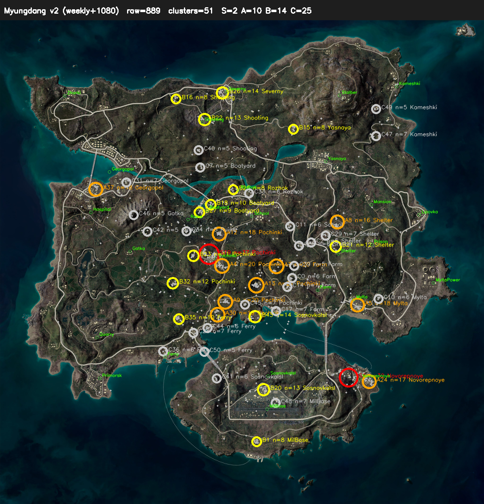

PUBG 프로 대회 영상 자동 분석 — YOLOv11 + SIFT homography 파이프라인. 2026-05-24.
두 다른 대회 영상에서 모두 등장 = 진짜 명당 후보. src=W+T가 그것.
| # | 등급 | 마커수 | 가까운 도시 | 거리 | 게임 좌표 | 출처 | 주요 팀색 |
|---|---|---|---|---|---|---|---|
| 1 | S | 37 | Pochinki | 135m | (0.4319, 0.4836) | W+T | red:30, blue:3, yellow:2 |
| 2 | S | 32 | Novorepnoye | 193m | (0.72, 0.7385) | W+T | gray:25, other:7 |
| 3 | A | 21 | Pochinki | 800m | (0.5293, 0.5483) | W+T | yellow:19, red:2 |
| 4 | A | 20 | Pochinki | 158m | (0.4589, 0.5079) | W+T | red:11, blue:3, other:2 |
| 5 | A | 20 | Pochinki | 729m | (0.4658, 0.5819) | W+T | orange:17, yellow:3 |
| 6 | A | 19 | Pochinki | 924m | (0.4497, 0.6084) | W+T | orange:7, purple:5, gray:4 |
| 7 | A | 18 | Mylta | 109m | (0.7389, 0.5891) | W+T | yellow:13, red:3, gray:2 |
| 8 | A | 18 | Pochinki | 412m | (0.4528, 0.442) | W+T | green:16, yellow:1, gray:1 |
| 9 | A | 17 | Novorepnoye | 161m | (0.7633, 0.7467) | W+T | gray:13, other:4 |
| 10 | A | 16 | Shelter | 528m | (0.6967, 0.4171) | W+T | purple:8, blue:6, red:2 |
출처: W=weekly_test 영상, T=video1080 영상. W+T = 두 영상 모두 등장. 거리=27도시 anchor 기준.

실제 영상 frame에는 "정답(박스 좌표)"이 없어서 그대로는 학습 불가. 사람이 손으로 박스 5000장 그리면 약 300시간 노동. 비현실적.
대신 우리가 코드로 가짜 marker를 그릴 때 좌표를 알고 있으므로 정답 자동 생성. 사용자 라벨링 0건으로 학습 시작 가능. 합성이 실제와 충분히 비슷하면 모델은 차이 모르고 학습 → 실제 영상 적용 시 작동.
| metric | v1 | v6 (gray 추가) | v7 (taego 추가) |
|---|---|---|---|
| precision | 99.64% | 99.69% | 99.68% |
| recall | 98.53% | 98.86% | 98.88% |
| mAP50 | 99.45% | 99.46% | 99.47% |
| mAP50-95 | 99.24% | 99.30% | 99.33% |
| 파일 | 의미 |
|---|---|
/tmp/pub34/yolo/runs/pub34_v7/weights/best.pt | 학습된 모델 (6MB, 보관 필수) |
2026-05-24-pub34-myungdang-v3-v7combined.json | 명당 클러스터 좌표 데이터 |
2026-05-24-pub34-myungdang-v3-v7combined.png | 전체 명당 지도 시각화 |
docs/projects/2026-05-23-pub34-yolo-pipeline.md | 전체 파이프라인 진행 문서 |
docs/resources/solutions/architecture-patterns/2026-05-23-pub34-classical-cv-detection-failure.md | 2주 시도 회고 + 교훈 |